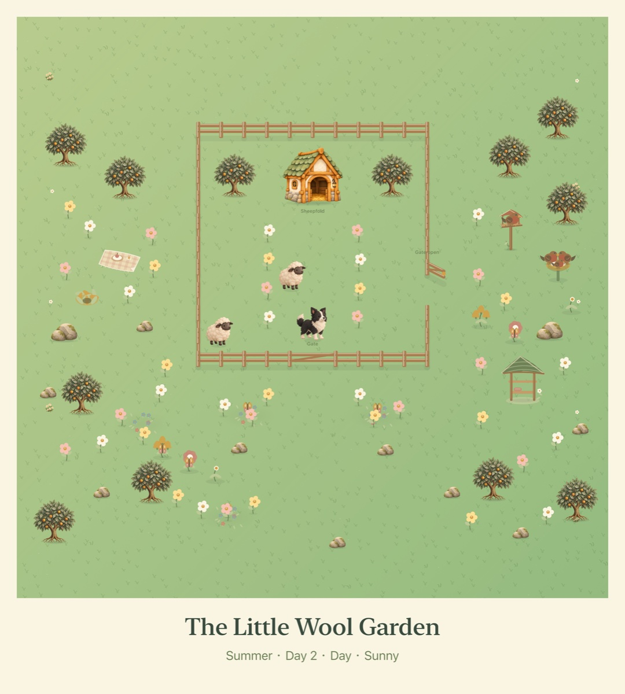

把散开的羊带回来
引导边牧走进羊群，让同品种的三只羊聚拢。照顾小羊，也慢慢赢得野羊的信任。
狗赶羊 · 一片属于你的牧场
带羊回家，给花找个位置。下雨也好，下雪也好，总有一只边牧陪你在草地上走走。
给这个网页换个天气
仅切换网页氛围，不是游戏操作。宣传动画＋真实雨雪实录
玻璃球为艺术演绎，不是游戏玩法。
从宣传片，走进真实牧场
切换下面的实录，看看羊群回家、小羊出生、小狗搬家，还有真的落在草地上的雨和雪。
三只同品种羊聚拢，留下一朵小花，再回到羊舍。历史模拟器实录 · 裁切展示 · 11 秒循环
不是只能看的牧场
不是等一个数字变大。你来带路、照看羊群，也决定每件小东西该放在哪儿。
引导边牧走进羊群，让同品种的三只羊聚拢。照顾小羊，也慢慢赢得野羊的信任。
聚拢的羊留下花朵，再走回羊舍。原来空空的草地，多了一点你亲手留下的痕迹。
挪动羊舍、摆好栅栏，给树木、小花和摆件找位置。边牧不只是赶羊，也是你的小搬家工。

今天，这里想换个样子
羊舍靠近树一点，栅栏往外挪一点。把喜欢的小东西放下来，走一圈，再改一改。没有标准答案，只有越来越像你的牧场。
还有一点小个性：用游玩赚取的绒毛，制作自定义羊品种。不是主玩法，也不需要购买付费金币。
想换个风景的时候
果园与溪流徒步免费开放。带回沿途的小物件和旅行记忆，再回到熟悉的草地。晴天、雨雾和雪天，也让同一片牧场有了不同心情。

这是一款以操控牧羊犬、照看羊群和布置牧场为主的休闲游戏，适合喜欢狗狗、动物和慢节奏牧场的 iPhone / iPad 玩家。“治愈”描述的是轻松氛围，不是医疗效果。
日常游玩和本地保存可以离线进行，也不需要注册游戏账号。下载、内购、恢复购买和 iCloud 存档同步需要网络及相应 Apple 服务。
基础牧场、委托，以及果园和溪流散步免费游玩。小帮手包、花园小院和山谷远足是可选的一次性永久购买内容；没有订阅或付费金币。实际价格请以所在地区 App Store 和购买确认界面为准。
支持 iOS 17 或更高版本的 iPhone、iPadOS 17 或更高版本的 iPad。当前商店介绍列出九种语言：简体中文、繁体中文、英语、日语、韩语、西班牙语、德语、法语和巴西葡萄牙语。
由独立开发者周培臣（CiiN / Peichen Zhou）制作。英文名为 Sheep Dog: A Cozy Meadow，App Store 编号为 6809808103。
先来走一圈，看看你会把这里布置成什么样。
免费开始，去 App Store ↗